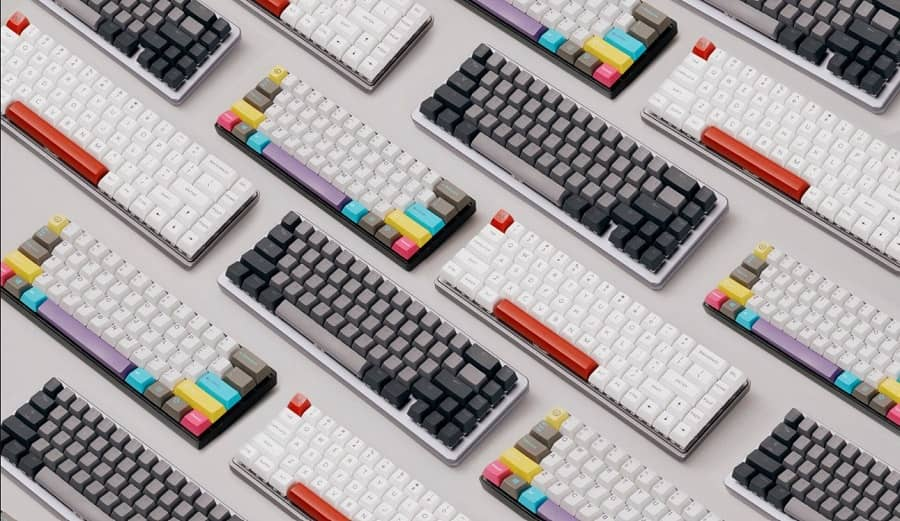
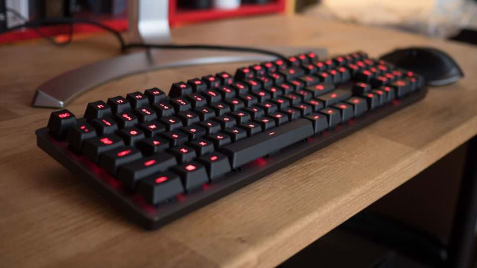
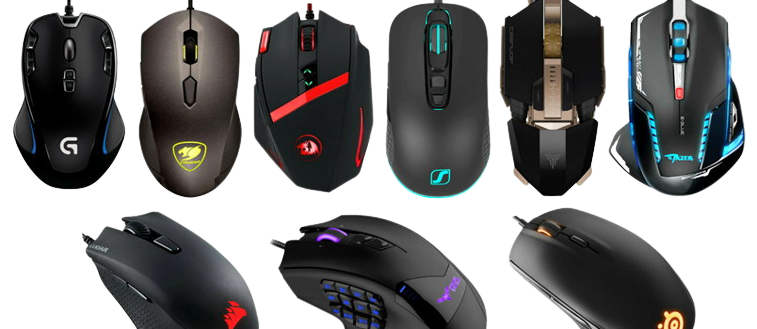

Un teclado es un dispositivo de entrada parcialmente inspirado en los teclados de las máquinas de escribir que utiliza un sistema de puntadas o bordes para actuar como palancas mecánicas o interruptores electrónicos que envían toda la información a una computadora o teléfono móvil.
Los teclados permiten ingresar información de manera optimizada en dispositivos electrónicos como computadoras, estaciones de trabajo, servidores y otros dispositivos
Un accesorio de juego es cualquier producto cuyos componentes internos y funciones están diseñados para proporcionar a los usuarios ciertas funciones para mejorar y facilitar su experiencia de juego. Lógicamente, no se trata solo de un diseño agresivo y lujoso o de la presencia de retroiluminación LED.
Estos periféricos cuentan con funciones específicas, configuración de software y un conjunto de teclas dedicadas que permiten al usuario personalizarlos según sus hábitos de uso.
Los compradores pueden distinguir entre tres modelos diferentes en el mercado de teclados para juegos. Teclados mecánicos, teclados de membrana y teclados semimecánicos.

Teclados mecánicos :
Estos son los teclados más solicitados en la comunidad de jugadores. Su estructura interna consiste en un mecanismo completo de interruptores mecánicos, comúnmente conocidos como embragues o interruptores mecánicos. Este sistema le da a cada tecla una función muy precisa. Y mayor paciencia también. Una de sus ventajas es que estos teclados te permiten configurar algunos de sus parámetros. Así, el usuario puede asignar determinadas funciones a varias teclas específicas y programar algunas de sus propiedades.
Este tipo de teclado ofrece mayor precisión y durabilidad que otros teclados del mercado. Por lo tanto, su precio es ligeramente superior al de sus competidores. En el caso de los teclados mecánicos, cabe destacar el característico sonido que da cuando se pulsan las teclas. Todo esto gracias a los interruptores. Por tanto, son productos más ruidosos que los teclados de membrana o semimecánicos. Este factor ha dividido a la comunidad entre los que odian este ruido en particular y los que encuentran satisfacción cada vez que oprimen una tecla.

Teclados de membrana :
Los teclados de membrana son muy populares en general, pero no tanto en el mercado de los juegos. Constituyen una gran parte de los teclados que se encuentran en tiendas, oficinas e incluso ordenadores domésticos. Su uso está diseñado para operaciones diarias y su funcionalidad es muy versátil. Este tipo de teclado tiene una membrana de goma que captura la señal de pulsación de teclas del usuario y la envía electrónicamente a la computadora.
Estos teclados tienden a ser esponjosos, de poco ruido y generalmente tienen una vida útil más corta en comparación con los teclados mecánicos. En general, los teclados de membrana para juegos tienden a tener un perfil bajo, lo que hace que las teclas sean más rápidas que los teclados mecánicos. El hecho de que las pulsaciones de teclas sean más rápidas no lo convierte en un tipo de teclado preciso.
Teclados de semimecánicos :
Como su nombre indica, se trata de teclados de diseño híbrido que ofrecen las ventajas de un teclado mecánico y un teclado de membrana. Su mecanismo utiliza el mismo sistema que los teclados mecánicos, pero su activación se realiza mediante una membrana.
En términos de tacto, los teclados semimecánicos son muy similares a los teclados mecánicos. Su tacto es firme y preciso, y su activación tan rápida como la de un teclado de membrana. Debido a esto, su costo de producción es considerablemente menor, por lo que su precio de mercado puede ser más asequible para el bolsillo.
Un mouse o mouse es un dispositivo señalador que se utiliza para facilitar la manipulación del entorno gráfico de una computadora. Suele ser de plástico y se utiliza con una sola mano.
Por lo general, el mouse o ratón cuenta dos botones:
El izquierdo, que te sirve para abrir, arrastrar, seleccionar y ejecutar distintas funciones.
El derecho, que te permite acceder a distintas funciones adicionales de los comandos.
La mayoría de los ratones cuentan con una rueda central conocida como scroll. Con ella el usuairo podra desplazarte por los documentos,distintas ventas desde la parte superior a la inferior y viceversa.
Láser: Este tipo de mouse es muy preciso e ideal para tareas que requieren mayor flexibilidad y velocidad. Hoy en día, la mayoría de los ratones de alta calidad son de este tipo.
Mecánico: Son ratones transbordadores. Es un ratón que funciona con una bola integrada, que al moverse emite señales proporcionales al movimiento del dispositivo.
Óptico: Se trata de una evolución del ratón de tipo mecánico, aunque en este caso no dispone de la mencionada bola. Funciona con luz que escanea sistemáticamente la superficie por la que pasa y la compara para saber si se ha producido algún cambio o no.
Trackball: Este es nuevamente un mouse con trackball, pero funciona al aire libre. Esto quiere decir que la bola no gira cuando movemos el ratón (como ocurre con los de tipo mecánico), sino que giramos y movemos la bola con los dedos para que el ratón no se mueva.
Touch: Este es un mouse solo táctil. Un ejemplo de este tipo de ratón son los touchpads integrados de los portátiles, que no es del todo correcto llamar "ratones", pero es cierto que sustituyen sus funciones.
